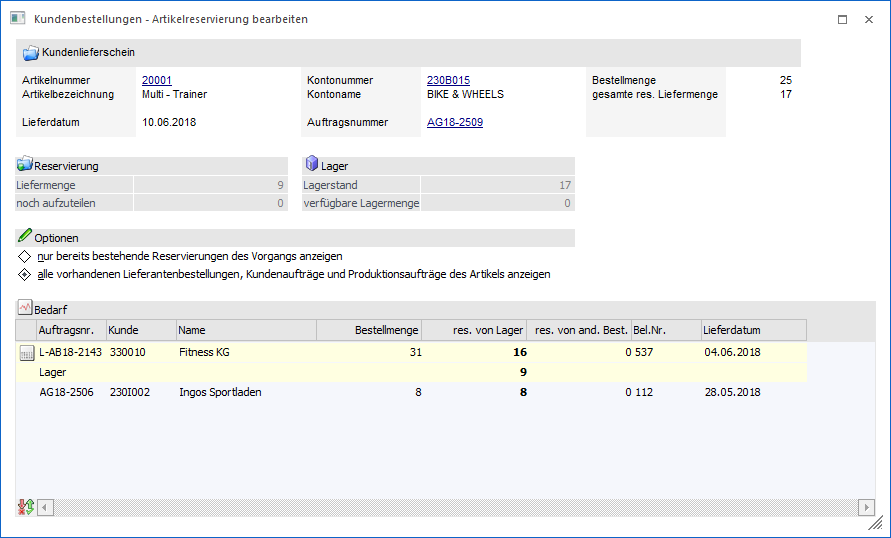
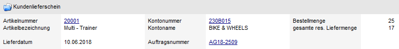
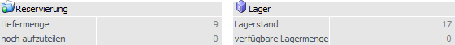
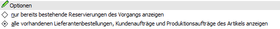
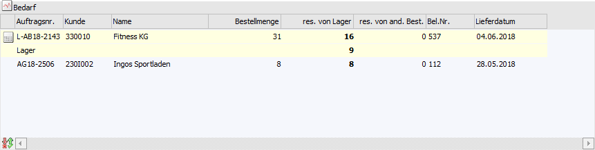
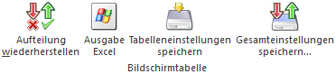
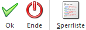

Wird die Menge eines Artikels mit Reservierungskennzeichen (WinLine FAKT - Stammdaten - Artikelstamm - Artikel - Register "Lager" - Unterregister "Einstellungen" - Feld "Produktion / Bestellung") in dem Fenster "Kundenbestellungen bearbeiten" editiert, öffnet sich automatisch das Fenster "Kundenbestellungen - Artikelreservierungen bearbeiten". Innerhalb des Fensters kann definiert werden, auf welche Bedarfszeilen von Bedarfserzeugern (Kundenaufträge), von Bedarfsträgern (Lieferantenbestellungen bzw. Produktionsaufträgen) oder dem Lager sich die Mengenänderung auswirkt.
Hinweis
Das Fenster kann auch manuell geöffnet werden. Dieses ist durch die Anwahl der Taste F8 zu realisieren, wobei der Fokus auf der Artikelnummer liegen muss.

Folgende Informationen und Einstellungen stehen zur Verfügung:
Info

In diesem Bereich wird Auskunft über den aktuellen Artikel, des geplanten Lieferdatums (gemäß Kundenauftrag) und des Kundenauftrags gegeben. Zusätzlich wird unter "gesamte res. Liefermenge" dargestellt, wieviel insgesamt vom Lager ausgeliefert werden soll.
Zuteilung

Ø Liefermenge
An dieser Stelle wird die Liefermenge der Kundenauftragszeile angezeigt. Die Vorgabe hierfür stammt aus "Kundenbestellungen bearbeiten".
Ø noch aufzuteilen
Hier wird die Menge angezeigt, welche ausgeliefert werden soll, aber noch nicht vom Lager reserviert wurde.
Achtung
Änderungen in diesem Fenster können nur gespeichert werden, wenn die noch aufzuteilende Menge "0" beträgt!
Ø Lagerstand
An dieser Stelle wird der aktuelle Lagerstand des Artikels angezeigt.
Ø verfügbare Lagermenge
Hier wird die Menge angezeigt, welche noch vom Lager verfügbar ist, d.h. den Bedarfszeilen von Bedarfserzeugern (Kundenaufträge bzw. Produktionsaufträge) zugeordnet werden könnte.
Optionen

In diesem Bereich wird definiert, welche Bedarfszeilen von Bedarfserzeugern (Kundenaufträge bzw. Produktionsaufträge) in der Tabelle "Bedarf" angezeigt werden sollen.
Ø nur bereits bestehende Reservierungen des Vorgangs anzeigen
Bei der Aktivierung dieses Radiobuttons werden nur jene Lieferantenbestellungen bzw. Produktionsaufträge angezeigt, bei denen bereits eine Reservierung für die Kundenauftragsmenge durchgeführt wurde (d.h. von denen der aktuelle Kundenauftrag Ware erhält). Zusätzlich wird das Lager dargestellt.
Ø alle vorhandenen Lieferantenbestellungen, Kundenaufträge und Produktionsaufträge des Artikels anzeigen
Bei der Aktivierung dieses Radiobuttons werden neben den Reservierungen des Vorgangs und dem Lager alle weiteren Kundenaufträge bzw. Produktionsaufträge des Artikels angezeigt, bei denen eine Reservierung vom Lager vorliegt.
Tabelle "Bedarf"

Innerhalb der Tabelle "Bedarf" werden die Bedarfszeilen von Bedarfsträgern (Lieferantenbestellungen und Produktionsaufträgen von denen der aktuelle Kundenauftrag die Ware erhält), von Bedarfserzeuger (Kundenaufträge bzw. Produktionsaufträge mit Reservierung vom Lager) und das Lager dargestellt. Die Sortierung wird wie folgt vorgenommen:
ü Lieferantenbestellungen bzw. Produktionsaufträge von denen der aktuelle Kundenauftrag mit Ware (aktuelle Artikel) versorgt wird (aufsteigend nach Lieferdatum / Produktionsdatum)
ü Lager (immer vorhanden)
ü Kundenaufträge bzw. Produktionsaufträge für welche eine Reservierung vom Lager vorliegt (aufsteigend nach Lieferdatum / Produktionsdatum)
Ø Bedarfsträger / Bedarfserzeuger
An dieser Stelle wird durch ein Symbol dargestellt, ob es sich bei der Bedarfszeile um eine Lieferantenbestellung, einen Kundenauftrag oder einen Produktionsauftrag handelt.
ü  - Lieferantenbestellung / Kundenauftrag
- Lieferantenbestellung / Kundenauftrag
ü  - Produktionsauftrag
- Produktionsauftrag
Ø Auftragsnr.
In dieser Spalte wird die Nummer der Lieferantenbestellung, des Kundenauftrags oder des Produktionsauftrags angezeigt.
Ø Kunde / Name
In diesen Spalten wird die Personenkontennummer samt Name des Belegs bzw. des Produktionsauftrags angezeigt.
Ø Bestellmenge
An dieser Stelle wird die noch offene Bestellmenge der Lieferantenbestellung, des Kundenauftrags oder des Produktionsauftrags angezeigt.
Ø res. von Lager (reserviert von Lager)
An dieser Stelle wird die Menge eingegeben, welche vom Lager für die Bedarfszeile reserviert werden soll.
Ø res. für Auftrag (reserviert für Auftrag)
Handelt es sich bei der aktuellen Zeile um eine Lieferantenbestellung bzw. einen Produktionsauftrag, von denen der aktuelle Kundenauftrag bereits Ware bezieht, kann an dieser Stelle die reservierte Menge geändert werden.
Beispiel
Es wurden 85 Stück zum 01.06.2018 bestellt. Aktuell sind noch 15 Stück auf Lager und es gibt eine offene Lieferantenbestellung über 100 Stück. Dem Kundenauftrag wären demzufolge 15 Stück vom Lager zugeteilt worden und 70 Stück von der Bestellung. Wenn der Kunde zunächst nur 5 Stück geliefert bekommen möchte, könnte die Reservierung vom Lager auf 5 Stück reduziert und die Reservierung von der Bestellung auf 80 Stück erhöht werden.
Ø res. von and. Best. (reserviert von anderen Bestellungen)
In dieser Spalte wird die Menge angezeigt, die von einem anderen bereits bestehenden Kundenauftrag für die aktuelle Bedarfszeile (Lieferantenbestellung bzw. Produktionsauftrag) reserviert worden ist.
Ø Bel.Nr.
Handelt es sich um eine Bedarfszeile einer Lieferantenbestellung bzw. eines Kundenauftrags, wird in dieser Spalte die Laufnummer des Belegs angezeigt.
Ø Lieferdatum
An dieser Stelle wird das Lieferdatum des Belegs bzw. des Produktionsauftrags angezeigt. Sollte das Datum kleiner/ größer dem Lieferdatum des Kundenauftrags sein, wird die Schrift der Zeile in Rot dargestellt.
Tabellenbuttons

Ø Aufteilung wiederherstellen
Durch die Anwahl dieses Buttons werden die getätigten und noch nicht gespeicherten Änderungen der Reservierung verworfen und der Ursprungszustand wiederhergestellt.
Ø Ausgabe Excel
Durch Anwahl des Buttons "Ausgabe Excel" wird der Inhalt der Tabelle nach Microsoft Excel übergeben.
Ø Tabelleneinstellungen speichern
Die Spalten einer Tabelle können grundsätzlich an beliebige Positionen verschoben, bzw. in der Breite entsprechend angepasst werden. Durch Anwahl des Buttons "Tabelleneinstellungen speichern" werden die Einstellungen benutzerspezifisch gespeichert und bei dem nächsten Aufruf des Programmpunktes wieder vorgeschlagen.
Ø Gesamteinstellungen speichern
Im Gegensatz zu "Tabelleneinstellungen speichern" können mit "Gesamteinstellungen speichern" mehrere Tabellenaufbauten gespeichert und nach Wunsch geladen werden. Zusätzlich werden Sonderfunktionen der Tabelle (z.B. "Spalte gruppieren") ebenfalls bei der Speicherung bedacht.
Buttons

Ø Ok
Durch die Anwahl des Buttons "Ok" bzw. der Taste F5 werden die Änderungen an den Reservierungen gespeichert.
Achtung
Änderungen in diesem Fenster können nur gespeichert werden, wenn die noch aufzuteilende Menge "0" beträgt!
Ø Ende
Durch das Drücken des Buttons "Ende" bzw. der Taste ESC wird das Fenster geschlossen und alle nicht gespeicherten Reservierungseingaben verworfen.
Ø Sperrliste
Mit Hilfe des Buttons "Sperrliste" wird eine Reservierungsliste ausgegeben. Auf dieser werden alle Bedarfszeilen des aktuellen Artikels aufgeführt, bei denen es einen Konflikt gibt.